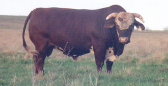

|  | About Rangeland cattle -- a draft brochure --
|
||
|
About the cattle Rangeland cattle are a distinct strain of general-purpose beef cattle that's under development by members of the Rangeland Breeders Association (RBA). The development of the strain is being directed toward developing functional range cattle that
The development of Rangeland cattle is being conducted within the confines of a closed population. No attention is being paid to developing cattle that possess any particular breed background within broad limits. Base cattle of the strain may include, but are not limited to straight-bred or crossbred Angus, Hereford, Muscles, Gyre, Dexter, Jersey, Kerry, Lowline, Red Poll, and Shorthorn. About their development The most distinctive feature of Rangeland cattle development is the Rangeland approach toward developing cattle that have the genetic ability to transmit an optimum balance of the fifteen most important traits in a population of general-purpose range cattle. These traits are temperament, bunching instinct, herding ability, early sexual maturity, fertility, calving ease, predator protection, mothering ability, acceptable growth, easy fleshing ability, active libido in bulls, hardiness, production longevity, visual appearance, and carcass merit. The development of Rangeland cattle does not include breeding and selecting cattle solely on the basis of breed, color, whether they are horned or polled, pedigree background, show-ring performance, or special breed percentage. Neither does it include breeding and selecting cattle solely on the basis of body size, growth, visual appearance, carcass merit, milk, or mothering ability. Rangeland cattle are being developed strictly on the basis of breeding best to best, year after year, within a closed population, and allowing temperament, breeding aggressiveness, reproduction, survival, and yearling weight largely determine which cattle are best. Animals that meet or exceed minimum performance standards for their contemporary group are either retained as within-herd replacements or additions, or marketed as breeding stock. Animals that fail to meet minimum performance standards for their contemporary group are removed from the program and marketed as either stocker, feeder, slaughter animals, or grassfed meat. Only animals that have two or more generations of uninterrupted breeding behind them in accordance with Rangeland cattle development protocol are eligible to be recognized as "distinct strain" Rangeland cattle, and consequently recognized as optimally adapted cattle for rugged range environments, and for the production of functionally superior, range-adapted breeding stock, and superior quality, range-aged grassfed beef. FOR FURTHER INFORMATION, CONTACT: | |||
|
Back to TRC's recommended reading |
|||
|
http://www.texasranchingconservancy.com/rangelandcattle.html | |||